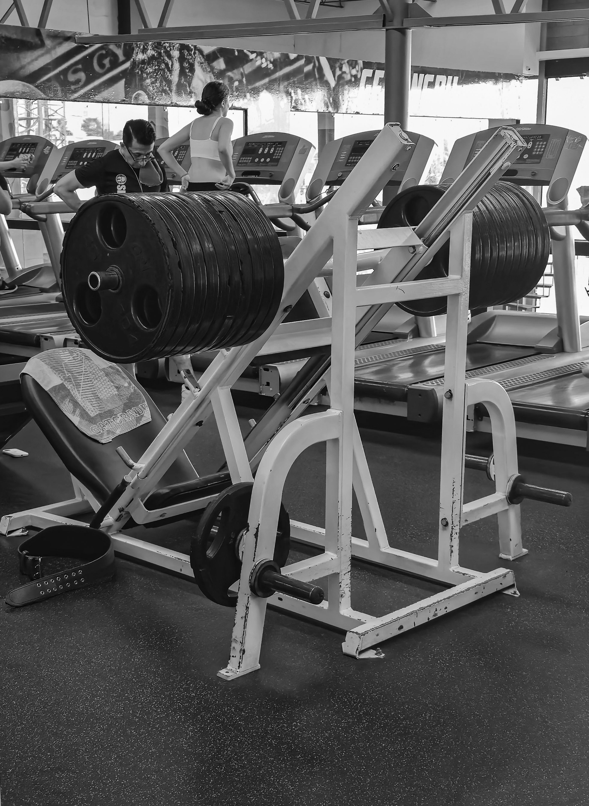

Lower Body Movements
1. Leg Curls
Trains the hamstrings first and warms up the back of the knee before heavy pressing.
2. Leg Extensions
Isolates the quads through a full stretch and top contraction.
3. Leg Press or Squat
My main heavy compound movement for overall lower body mass and strength.
4. Calf Raises
Performed with a pause at the bottom stretch and a full press at the top.
5. Hip Adductors
Targets the inner thighs, which contribute to leg stability and squat strength.
6. Hip Abductors
Works the outer glutes and hips to keep the lower body balanced.
Abdominal Finisher
I train abs like any other muscle group by using progressive resistance rather than doing endless bodyweight crunches.
7. Cable Crunches
Allows easy weight progression to build the upper and middle abs through spinal flexion.
8. Leg Raises
Done hanging or on a captain's chair to target the lower abs and hip flexors.